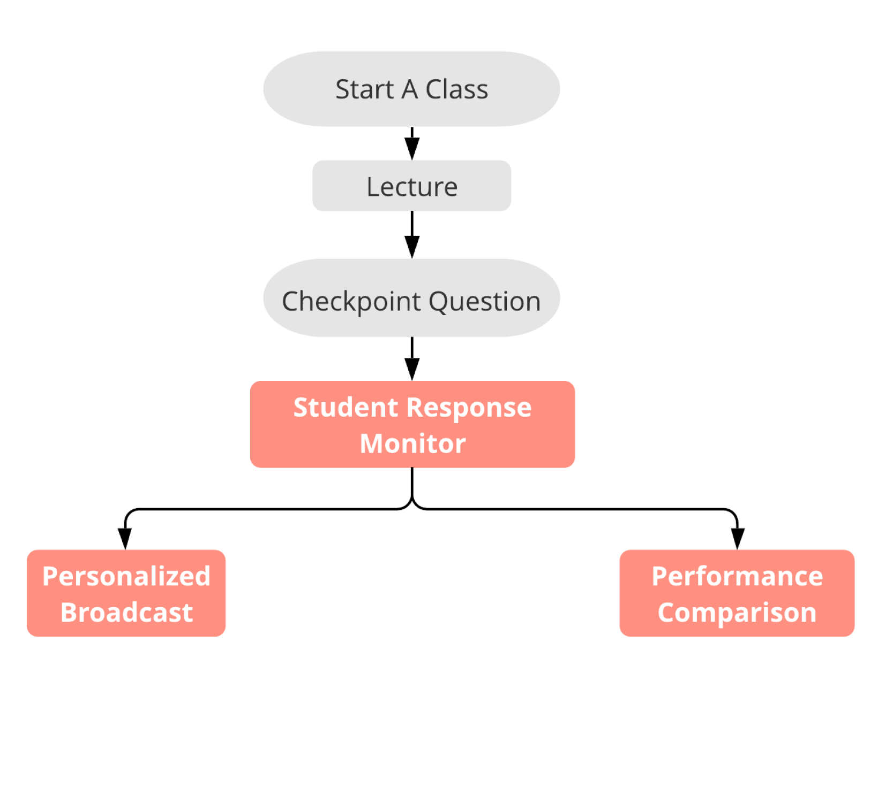

Welcome to Garde2 Class B! Mr.K and 30 students are here to have a Python level 1 course.
Demo video
Structure flow
Teachers could publish checkpoint questions during lecture time and track students’ answer statuses. They could remind unanswered students and display the top performance student list after the response time.
Performance comparison offers a visualized 1-D scatter plot that shows the average performance and how this class performed compared with the other classes this teacher teaches.
Personalized broadcast includes three functions: screen sharing, resource sharing and message sending. Resource Sharing: Teachers could manage the resource library and send unit-specific resources (videos, tutorials, and slides) to specific groups of students.
Teachers will receive an auto-generated short summary immediately after the whole checkpoint question session. The system also recommends some targeted materials to support teacher involvement.